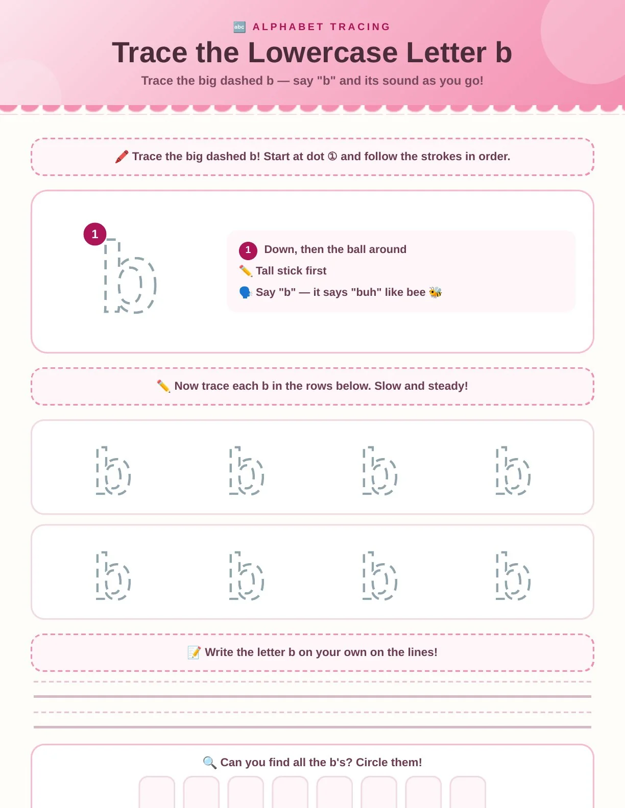

Lowercase Letter B Free Printable Lowercase Letter B Tracing Activity For Kids
Quick Answer
This free printable helps toddlers and preschoolers practice tracing the lowercase letter b — a tall straight line with one round bump at its foot. The worksheet includes large guided tracing lines, directional arrows, and fun practice rows that teach the order that matters most for this letter: line first, then bump. Download and print at home with no signup needed — perfect for building fine motor skills and letter recognition through hands-on practice.
Small b starts the word bear in every storybook, and hides inside rabbit and baby too. This free printable lowercase letter b tracing worksheet gives toddlers and preschoolers a fun, no-prep way to practice the bat-and-ball shape — print it at home and trace the letter b through play.
✏️ Trace The Letter B
Use the printable to help your child trace the lowercase letter b, drawing the tall line first and the bump second. That order is the whole secret of b — line first means b, circle first means d — and it builds confidence with early letter formation and writing skills.
Free Lowercase Letter B Tracing Printable

How To Use This Printable
- Download and print the letter b pages on letter-size paper. The print button opens the full-size page in a new tab if you prefer to print from there.
- Say the letter name and sound together before your child starts: “B says /b/, like bear, ball and banana — and in storybooks, those words start with this small b.”
- Trace slowly: tall line down first, then bounce up to the middle and curve around for the bump. Say “bat, then ball” as each letter takes shape.
- Play I-spy with the letter b around the house — look inside words too, on book covers and boxes: rabbit, baby, web.
🔤 All About Small b
Small b is a bat and a ball. Draw the bat first — a straight line from the top line all the way down to the ground line. Then add the ball: start at the middle line, curve out to the right, and land back on the ground line, closing the bump against the bat.
Small b is the letter that gets mixed up with d more than any other, and the fix is in the order. B starts with the bat — the line. D starts with the ball — the circle. If the line came first, it is a b.
The letter b makes the /b/ sound in bear, ball and banana, and it hides inside words too — there is a b in rabbit, in baby, and at the end of web. Most of the b's your child will ever read are this small one, doing the everyday work inside storybook words.
Why Trace Lowercase Letters?
Children meet lowercase letters far more often than capitals — nearly every word in a storybook is lowercase — and b is one of the most useful, starting bear, ball and baby. It is also a tall letter, standing the full height of the lines, so it teaches the reach from the ground line to the top line. Practicing the letter b also supports fine motor control, letter formation, and early handwriting development.
🎁 Keep Exploring Free Learning Activities
Discover more printable activities, toddler resources, and learning ideas created for busy parents.
🎁 View All Free Resources❓ Lowercase Letter B Tracing FAQ
Is this lowercase letter B tracing printable really free?
Yes — this lowercase letter b tracing printable is 100% free to download and print at home. No signup and no payment needed. Just tap the download button and print as many copies as you like — repetition is how the bat-then-ball order becomes automatic.
What ages is this printable best for?
It is made for toddlers and preschoolers. Small b is a friendly tall letter — one line, one bump — though it is famous for being confused with d, so a grown-up nearby helps at first. Younger toddlers trace happily with a grown-up beside them, while older preschoolers can usually manage the page on their own.
How can we practice the small letter b at home?
Say “bat, then ball” while your child traces — the line always comes first for b. Point out small b at the start of bear and ball in storybooks, and hiding inside rabbit. Little and often is the rhythm that works — a few playful minutes, several times a week.
🔗 More Free Printables You’ll Love
- Free Alphabet Coloring Pages Free printable alphabet coloring pages for little learners.
- Free Uppercase Letter B Tracing Free printable uppercase letter b tracing for little learners.
- Free Lowercase Letter C Tracing Free printable lowercase letter c tracing for little learners.
- Free Lowercase Letter D Tracing Free printable lowercase letter d tracing for little learners.